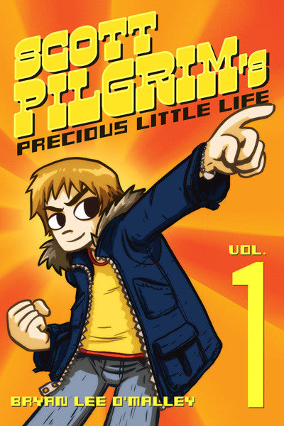

The series begins by introducing Scott Pilgrim, a 23-year-old Canadian slacker living in Toronto with his sarcastic gay roommate Wallace Wells. He has started "dating" a Chinese-Canadian high-school girl, Knives Chau. Although his friends think it's scandalous, since she is only 17, Scott doesn't consider it a big deal as all they do is chat about her school-life. It is implied during a phone conversation with his sister, Stacey Pilgrim, that this relationship is Scott's attempt to get over an ex. He is the bass player in the band Sex Bob-omb, along with his friends Stephen Stills (guitar) Kim Pine (drums) and "Young" Neil Nordegraf (he lives in the house they rehearse in) but Stephen is the only member who is recognized as being "the talent" and the other members rarely take the endeavor very seriously.
One night, Scott begins dreaming about a girl on rollerblades that he's never met before whom he later glimpses in real life, delivering a package to the library. Her repeated presence in his dreams and a coincidental meeting at a party thrown by Stephen's on-off girlfriend Julie Powers prompts him to become obsessed with finding out more about her. He discovers that she is Ramona Flowers, a girl who works for Amazon.ca and has recently come to Toronto from New York after a rumored messy break-up with someone named Gideon.
Scott orders a few CD's from Amazon.CA as a pretext to meet her again, and receives an email from an unknown party (later revealed to be Matthew Patel) challenging him to battle, but Scott pays it little heed and promptly deletes it. After another dream about Ramona, in which she is carrying his package, Scott wakes to find her at his door. She explains that she uses subspace portals as part of her job to cross long distances in seconds; one such route passes through Scott's brain, hence his dreams. Having convinced her he isn't a weirdo after their previous encounters, they spend the evening together and go back to her house during a heavy snowstorm. After blundering into her bedroom while she is changing, Scott and Ramona kiss and sleep together, but don't have sex.
The next day, Scott goes home. Wallace informs him that he needs to break up with Knives if he plans to pursue a serious relationship with Ramona, but when he meets her later in preparation for their gig at Club Rockit, Knives is considerably more forward than usual, and Scott fails to tell her. He also receives a letter from Matthew, which he again discards.
After an opening performance by rival band Crash and the Boys, which features one song that is 0.4 seconds long and another that leaves the audience comatose, Sex Bob-omb prepares to begin their set when Matthew descends upon the stage and engages Scott in a video game-style duel. He is revealed as Ramona's 1st evil ex-boyfriend, and has mystical powers that allow him to summon "demon hipster chicks". Scott prevails, his final attack obliterating Matthew and leaving behind a handful of coins. On the subway home, Scott and Ramona decide to become a couple, on the proviso that Scott agrees to defeat her other evil-exes. When Scott asks if Gideon is one of them, Ramona's head glows sharply and she starts acting distant, insuring a long and awkward bus ride home.